Midterm Exam, Monday, April 3, 1995.
Please do all four problems. Show all work. No books or calculators allowed.
You may use any result from class, the homeworks, or the texts, except where
stated.
You may use one sheet of handwritten notes.
The exam lasts two hours.
- 1.
- (25 points)
Consider a bipartite graph G=(V,E), where V can be broken into
two parts U and W, and every edge in E has one endpoint in U
and one in W.
(Formally, 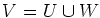,
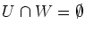,
and 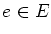
implies that
e=(i,j), where 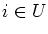
and 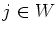.)
Let
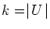
and
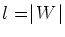.
Note that we have not assumed
that every vertex in U is adjacent to every vertex in W.
Because this is a bipartite graph, the maximum cardinality matching
problem can be solved by solving its linear programming relaxation
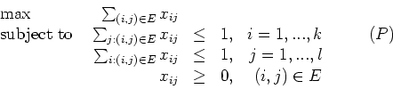
where xij is one if edge (i,j) is in the matching,
and zero otherwise.
Every basic feasible solution to both (P) and its dual (D) is integral.
- (a)
- (5 points)
What is the dual (D) to the linear program (P)?
(Hint: The dual of a linear program of the form
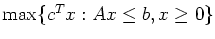
is
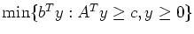.)
- (b)
- (10 points)
A node cover of G is a subset S of V such that every
edge in E is incident to at least one vertex in S.
What do the integral solutions to (D) correspond to?
What do you conclude from strong duality?
- (c)
- (10 points)
What are the complementary slackness conditions for the
pair (P) and (D)? Interpret these conditions.
- 2.
- (25 points)
An instance of the Hamiltonian Circuit problem is given by:
Given a graph G=(V,E), does there exist a circuit that visits
every vertex in V?
We saw in class that the Hamiltonian circuit problem is NP-Complete.
An instance of the Hamiltonian Path problem is given by:
Given a graph G=(V,E), does there exist a path that visits
every vertex in V?
Use the fact that the Hamiltonian circuit problem is NP-Complete
to show that the Hamiltonian path problem is NP-Complete.
- 3.
- (25 points)
Consider the node packing problem on the graph G=(V,E).
This can be written
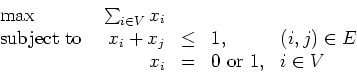
- (a)
- (10 points)
We saw in class that if the vertices
v1,...,v2k+1
(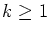,
k integer)
give a circuit then the odd hole inequality
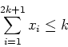
is valid for the node packing polytope.
What is the Chvatal rank of this inequality?
- (b)
- (15 points)
We saw in class that if the vertices
v1,...,v2k+1
(,
k integer)
form a clique then the clique inequality
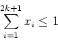
is a facet of the node packing polytope.
What is the Chvatal rank of this inequality when k=1?
Show that the Chvatal rank of this inequality is no more than 2 if
k=2.
- 4.
- (25 points)
Let G=(V,E) be a complete graph on m vertices, and let n=m(m-1)/2 be
the number of edges.
The set of matchings on G is
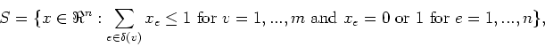
where 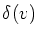
is the set of vertices adjacent to vertex v.
- (a)
- (10 points)
Show that the dimension of S is n.
- (b)
- (15 points)
An odd set constraint has the form
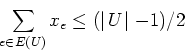
where U is a subset of V of odd cardinality
and E(U) is the edges in E that have both endpoints in U.
We saw in class that this inequality is valid for S.
Show that it is a facet of S when
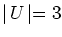.
John E. Mitchell
2005-12-09